Referensi Utama: Kurose & Ross - Computer Networking: A Top-Down Approach (8th Ed)
Dosen Pengampu:
1. Konsep Dasar & Arsitektur VLAN
2. VLAN Trunking & Protokol Tagging
3. Konfigurasi Cisco IOS & Troubleshooting
4. Metode Inter-VLAN Routing
Cakupan topik Lapisan Link (Link Layer) dan Jaringan Area Lokal (LAN):
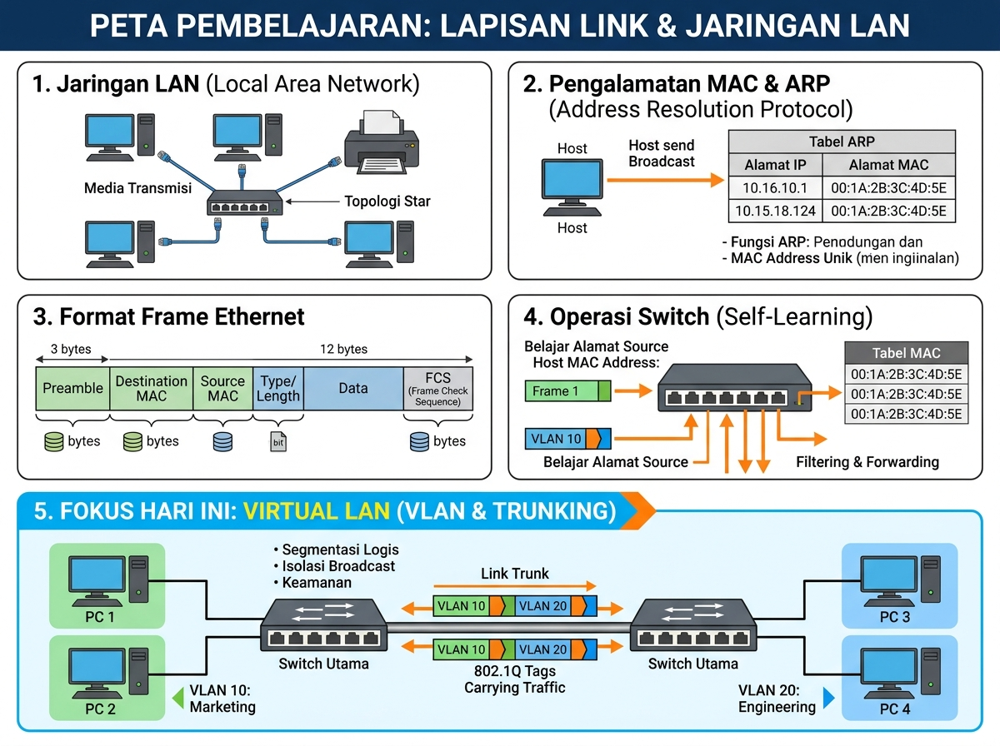
Broadcast Domain, Isolasi Trafik, dan Klasifikasi Tipe VLAN
Dinamika jaringan lokal berskala besar memunculkan kendala ketika jumlah host bertambah dan pengguna berpindah secara dinamis.
Permasalahan Domain Broadcast Tunggal (Single Broadcast Domain):
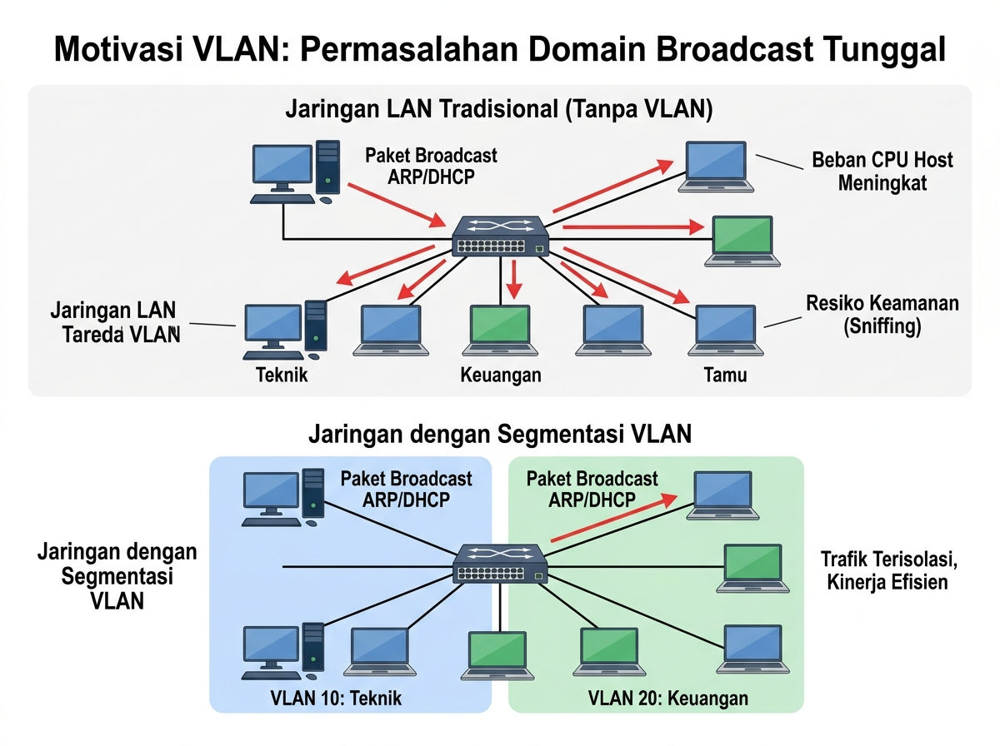
Dalam organisasi berskala menengah hingga besar, penempatan ruang kerja pengguna sering kali tidak selaras dengan batasan fisik jaringan kabel.
Studi Kasus Relokasi Kerja:
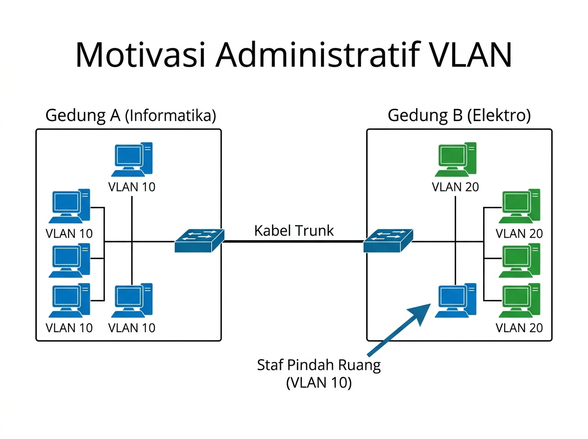
Switch terkelola (managed switch) memungkinkan pembagian port fisik ke dalam beberapa Virtual LANs secara independen.
Prinsip Kerja Port-Based VLAN (Static VLAN):
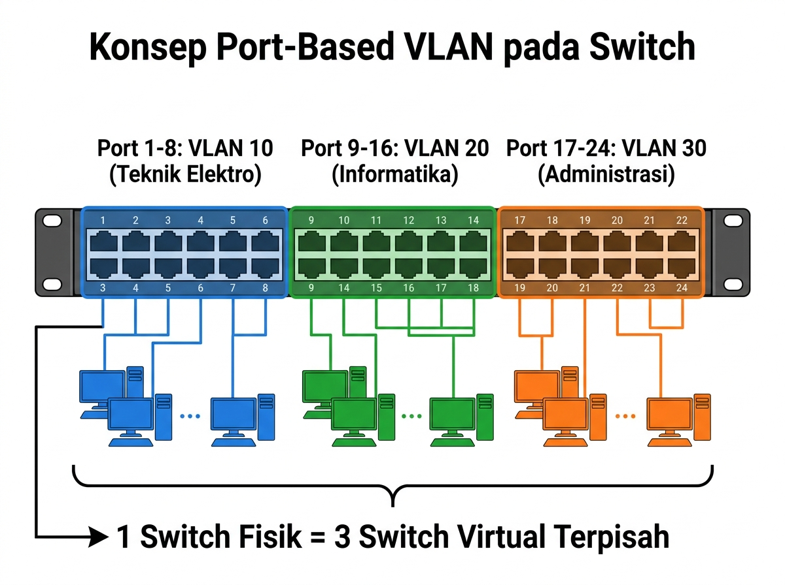
Dua pilar fundamental dalam implementasi VLAN adalah isolasi keamanan di Layer 2 dan fleksibilitas penentuan keanggotaan:
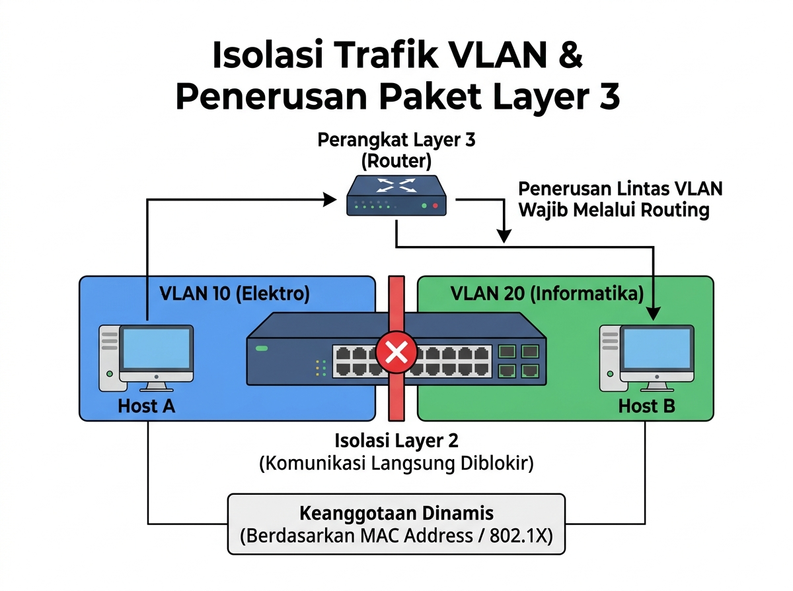
Dalam topologi jaringan kampus atau gedung bertingkat, host-host dalam satu VLAN sering kali terhubung ke switch fisik yang berlainan.
Mekanisme Port Trunk & Ekstensi VLAN:
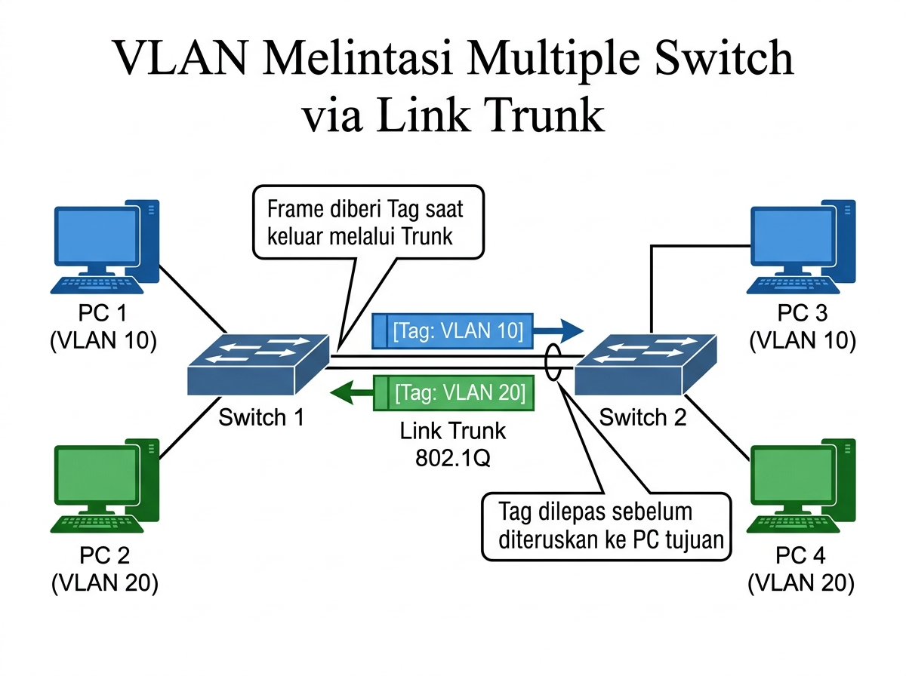
Standar industri IEEE 802.1Q menyisipkan bidang Tag tambahan sebesar 4 Byte (32 Bit) tepat di antara alamat MAC Sumber dan kolom Tipe/Panjang:
0x8100 sebagai penanda bahwa
frame memuat tag 802.1Q.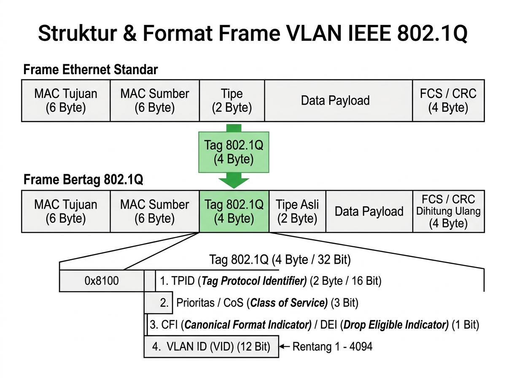
Pada skala Cloud dan Data Center modern, batas 4.094 VLAN konvensional tidak lagi mencukupi. Digunakanlah EVPN dan VXLAN:
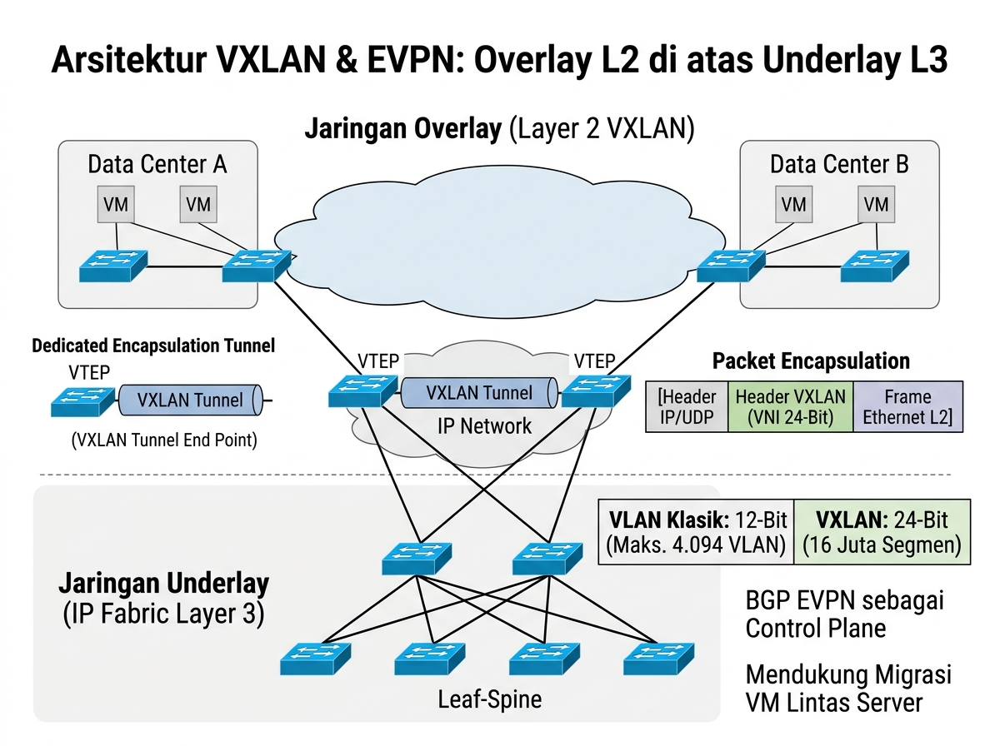
Kondisi operasional default switch pabrikan sebelum dikonfigurasi VLAN:
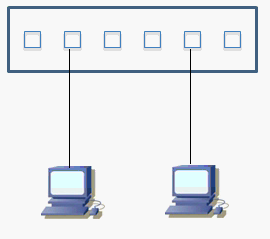
Setelah switch dikonfigurasi dengan 2 VLAN berbeda (misal VLAN 10 Merah dan VLAN 20 Biru):
192.168.10.0/24 vs
192.168.20.0/24).
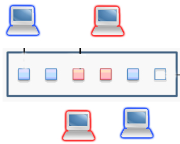
VLAN adalah pengelompokan logik dari perangkat-perangkat jaringan yang terhubung ke port switch, seakan-akan berada pada segmen fisik terpisah.
VLAN 10 Sales,
VLAN 20 HRD).
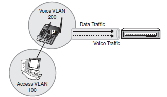
1. Peningkatan Keamanan (Security):
2. Penghematan Biaya (Cost Reduction):
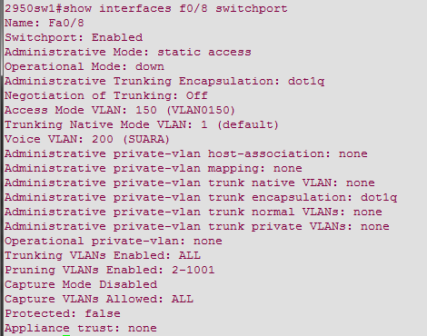
3. Performa Lebih Tinggi:
4. Efisiensi Proyek & Manajemen:
5. Fleksibilitas Geografis:
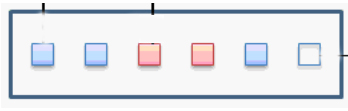
Penomoran VLAN pada switch Cisco terbagi ke dalam dua rentang (range) utama:
vlan.dat pada
memori flash switch.running-config switch (NVRAM).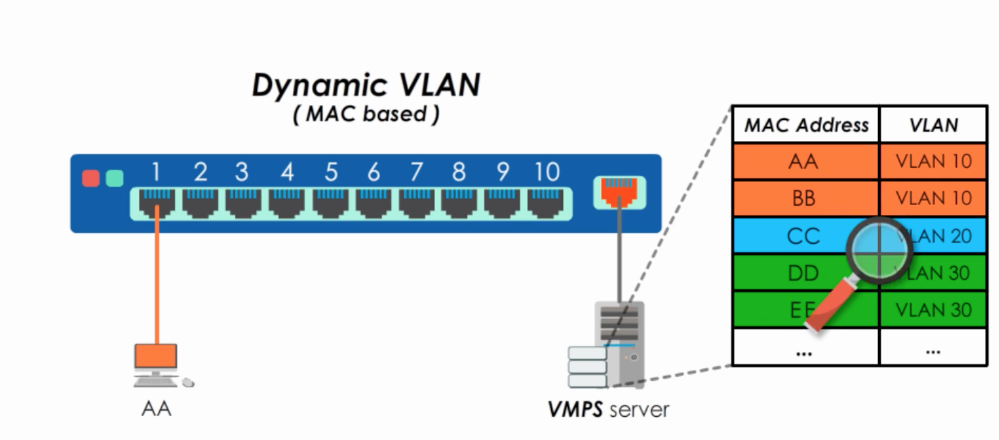
Klasifikasi fungsional VLAN dalam arsitektur kampus/perusahaan:
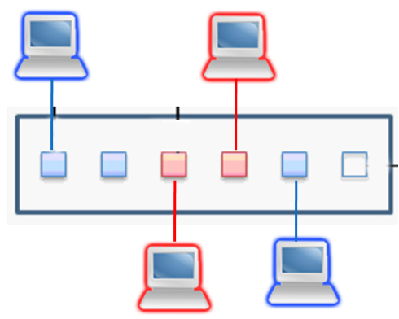
interface vlan X) dikonfigurasikan di sini agar administrator dapat
me-remote switch via SSH / HTTPS dengan aman.
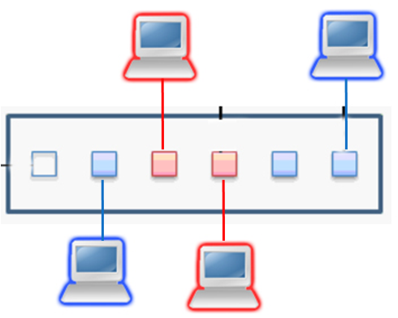
Trafik panggilan suara (VoIP) membutuhkan penanganan istimewa (QoS) di dalam jaringan karena sangat sensitif terhadap gangguan:
Membutuhkan bandwidth stabil tanpa fluktuasi agar audio tidak patah-patah.
Delay transmisi end-to-end harus berada di bawah 150 ms.
Frame suara harus memiliki nilai 802.1p CoS tinggi (CoS 5) di switch queue.
1. Static VLAN Membership:
2. Dynamic VLAN Membership:
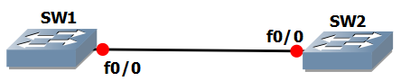
Link Trunk, Format Frame IEEE 802.1Q, ISL, dan Negosiasi Dinamis DTP
Trunk adalah link penghubung point-to-point antara Switch ke Switch, atau Switch ke Router.
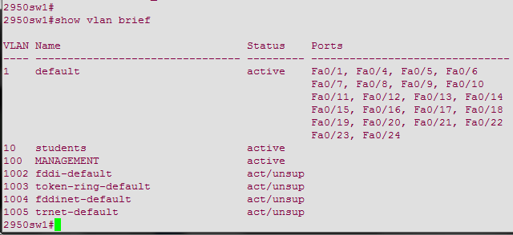
Protokol enkapsulasi tagging kepemilikan Cisco sebelum standar 802.1Q diadopsi luas:
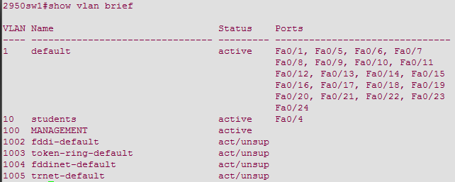
Protokol penandaan frame terbuka yang menjadi standar industri global:
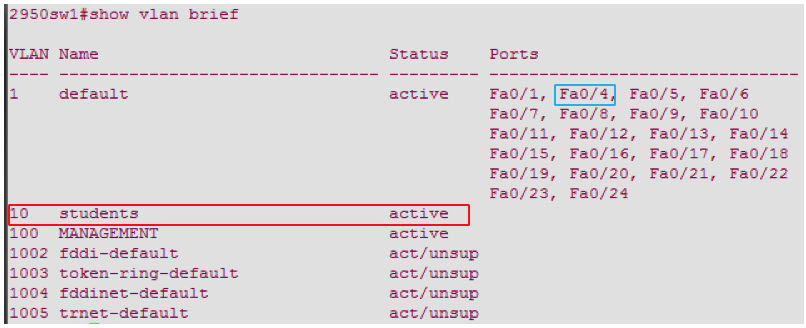
DTP adalah protokol milik Cisco yang berfungsi melakukan negosiasi otomatis status port (Access vs Trunk) saat terhubung dengan port switch seberang.
Matriks hasil negosiasi mode switchport antar dua switch yang terhubung:
| Port Lokal | Port Remote | Hasil Link |
|---|---|---|
| Dynamic Auto | Dynamic Auto | Access |
| Dynamic Auto | Dynamic Desirable | Trunk |
| Dynamic Desirable | Dynamic Desirable | Trunk |
| Trunk | Dynamic Auto / Desirable | Trunk |
| Trunk | Access | Error (Mismatch) |
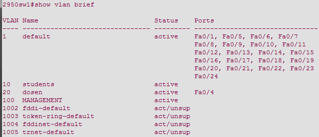
Mode Access
(switchport mode access):
Mode Trunk
(switchport mode trunk):
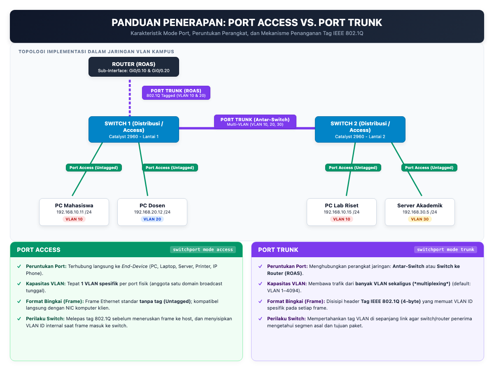
Implementasi CLI, Allowed VLAN, dan Penanganan Berbagai Error Mismatch
Langkah-langkah pembuatan VLAN dan pemetaan port Access pada Cisco IOS CLI:
Langkah 1: Membuat VLAN & Penamaan
Langkah 2: Menetapkan Port sebagai Access
interface range f0/1 - 10 jika ingin
memasukkan banyak port sekaligus ke VLAN yang sama.
Menghapus Port dari VLAN / Menghapus VLAN:
Perintah Verifikasi Utama:
Secara default link Trunk meloloskan seluruh VLAN (1–4094). Demi keamanan dan penghematan bandwidth, kita wajib membatasi VLAN yang diizinkan lewat (VLAN Pruning / Allowed List):
Hanya VLAN 1 s.d. 20 dan 30 yang diperbolehkan lewat; VLAN lain yang tidak terdaftar akan otomatis di-drop pada link trunk ini.
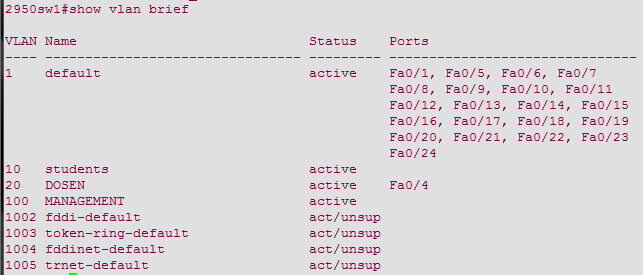
Terjadi ketika port trunk 802.1Q di ujung kiri dan kanan memiliki konfigurasi Native VLAN yang berbeda:
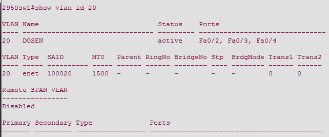
1. Trunk Mode Mismatch:
trunk, sedangkan sisi seberang dikunci
access.
2. Allowed VLAN Mismatch:
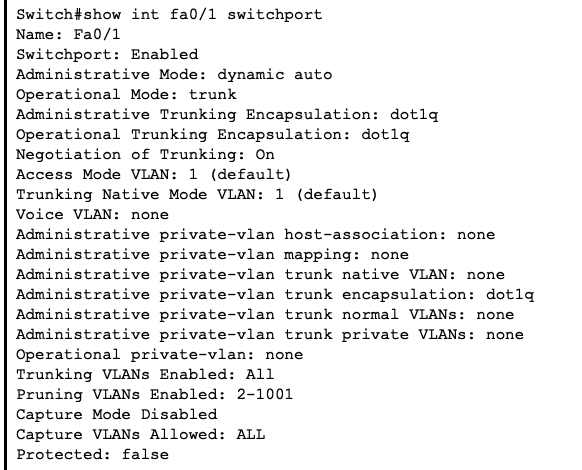
Menghubungkan Antar-VLAN: Traditional, Router-on-a-Stick (ROAS), dan Switch Layer 3 (SVI)
Secara desain, VLAN mengisolasi jaringan di Layer 2. Namun di dunia nyata, host VLAN 10 (Sales) seringkali perlu berkomunikasi dengan host VLAN 20 (HRD) atau mengakses Server bersama.
Evolusi Tiga Metode Inter-VLAN Routing:
1 kabel fisik per VLAN ke router. Sangat boros port dan usang.
1 kabel trunk fisik dengan sub-interface logikal (dot1q) di router.
Routing internal hardware ASIC via SVI dengan performa wire-speed.
Metode generasi pertama yang digunakan saat router dan switch masih terpisah secara ketat:
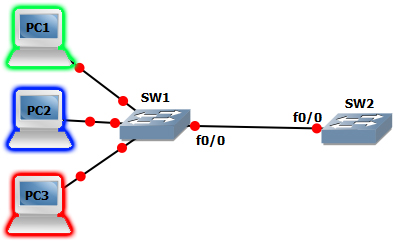
Solusi cerdas yang sangat populer untuk jaringan skala kecil dan menengah:
Gig0/0) dipecah secara logika
menjadi banyak Sub-Interface:
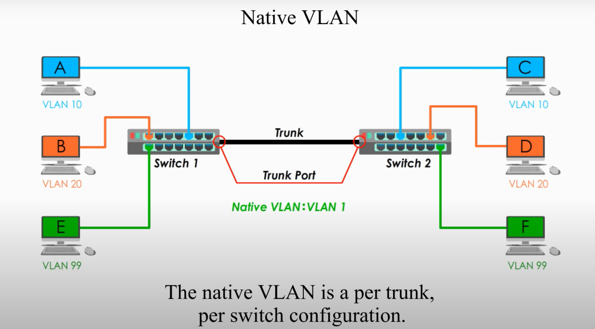
Teknologi standar modern untuk jaringan kampus dan Enterprise (Multilayer Switching):
ip routing pada Switch Layer 3 mengaktifkan mesin routing global internal
switch.
0x8100 + VLAN ID 12-bit). Mendukung Native VLAN untuk
frame untagged.
dot1q) di router — ideal untuk skala
kecil/menengah.Laboratorium Virtual Cisco Packet Tracer & Validasi Routing
Rancang topologi dan buktikan implementasi Router-on-a-Stick (ROAS) dengan skenario lab berikut:
1. Tambahkan 1 Router (Cisco 2911) dan 1 Switch (Cisco 2960) di lembar kerja Cisco Packet Tracer.
2. Buat 3 buah VLAN pada Switch: VLAN 10 (Sales), VLAN 20 (HRD), dan VLAN 30 (Guest).
3. Pasang minimal 2 PC untuk masing-masing VLAN dan atur port switch yang terhubung sebagai Access Port.
4. Konfigurasikan link penghubung Switch ke Router sebagai mode Trunk 802.1Q.
5. Di Router, konfigurasikan Sub-Interface dengan
enkapsulasi encapsulation dot1Q <vlan-id> sebagai Default Gateway tiap
subnet.
6. Lakukan validasi Ping antar-VLAN dan sertakan
tangkapan layar output show ip route serta show vlan brief.
Pertemuan berikutnya: Pertemuan 11: Socket Programming (TCP & UDP)
Persiapkan pemahaman mengenai komunikasi antar-proses (IPC), socket API di lapisan Transport, serta pembuatan program client-server sederhana.